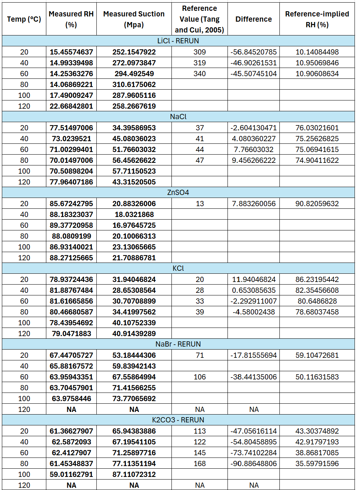
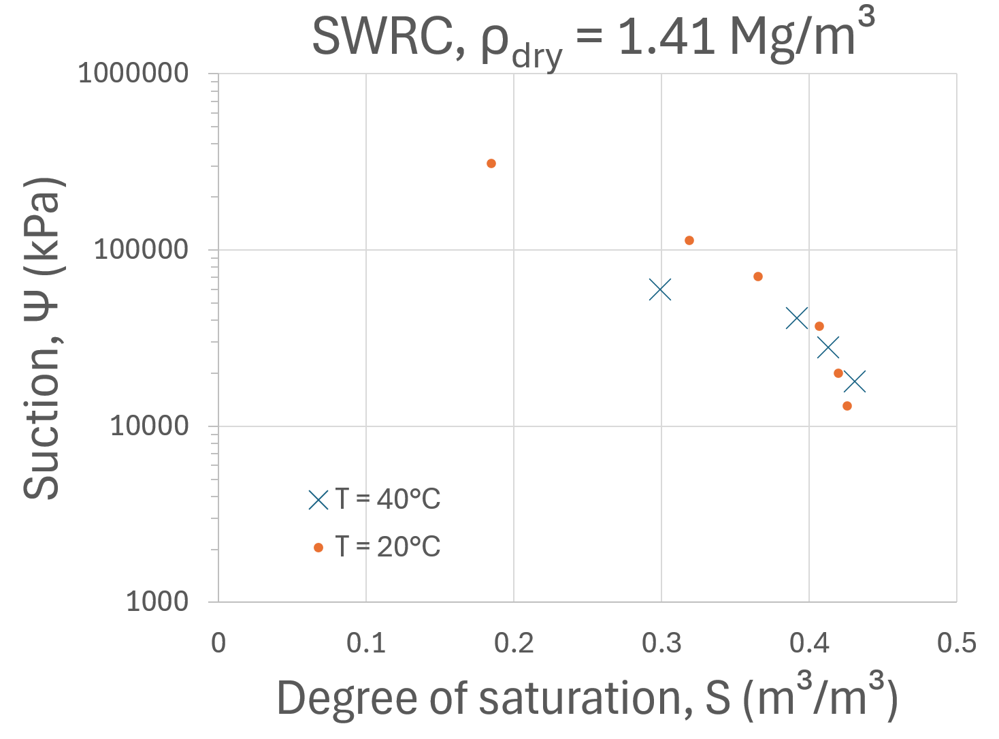
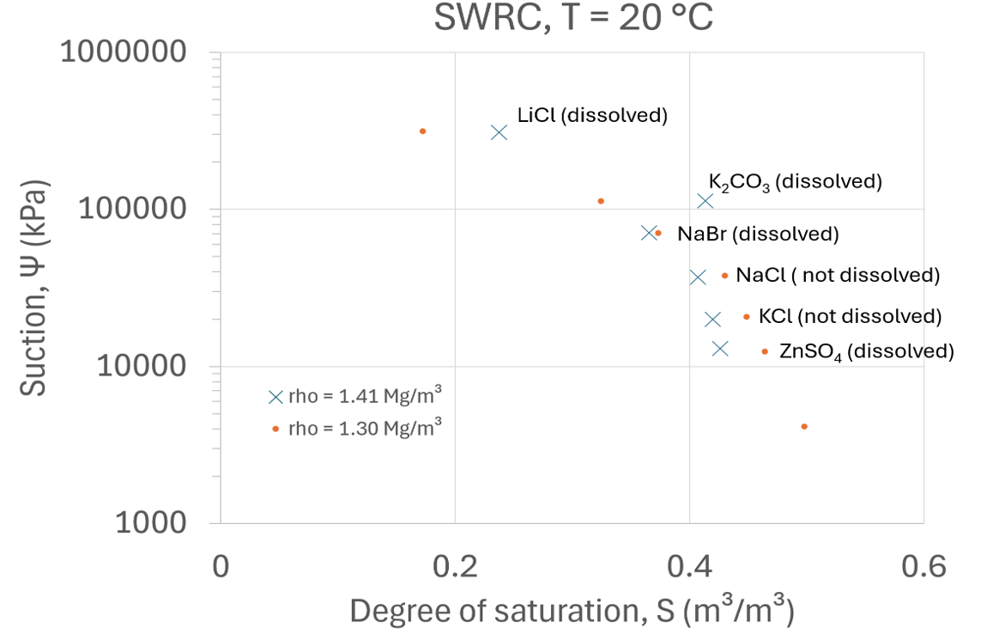
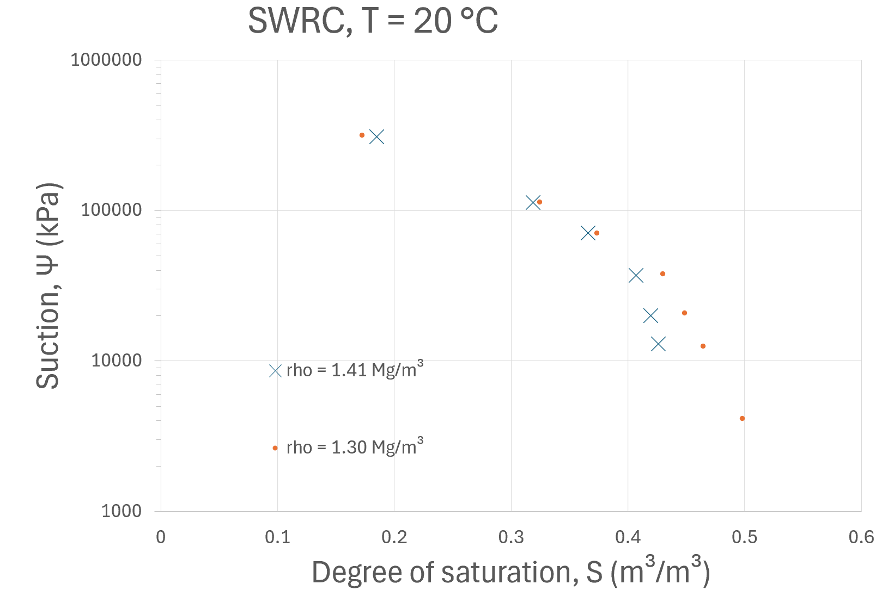

Tank-scale tests
Plots and notes for the final heating increase showing the first ~3770 hours pulled on 2026-06-30.
Update summary
The heater increase was successful, and the data show the first 7 days after the heat increase. I changed the dielectric sensor data from logarithmic to linear to show the recent changes over the past week. Both saturation and volumetric water content appear to have recently begun a steady path post-increase. I will post the newly updated section next week. The hydration equipment is ready and on standby for whenever we are ready to move forward.


Manual data corrections
Manual corrections for heater, thermocouple, and RH sensor artifacts.
Update summary
During the initial 30 minutes of the heater increase, the readings across two thermocouples and the values from both the heater core and heater surface were somewhat rugged due to instrumental variation. I ended up manually correcting these values by making edits in the Excel sheets and applying a corrective filter that tied the skewed data back to readings known to be correct at the beginning and end of that window. I also corrected the issues I mentioned in my last update for the bottom-center thermocouple and the RH reading. These edits are shown in the plots below for the corrected windows.


Relative humidity tests
No changes made to the section below!!
The values shown in this suction table were obtained by digitizing the relative humidity values from the salt calibration plots, as shown in the Excel sheet I provided. Several of the calculated suctions do not agree with the reference values from Tang and Cui (2005) and Wan et al. (2015) that were listed in the manuscript. Some salts are reasonably close over certain temperature ranges, particularly NaCl and portions of the KCl data, but others are very far off. The K₂CO₃ values are especially far from the published reference values, and the NaBr and LiCl values also appear questionable in some temperature ranges.
For each temperature step, I selected an RH value from the portion of the curve that appeared closest to equilibrium, generally near the end of the temperature hold and before the next transition. However, some plots did not show a clearly flat RH plateau, especially at higher temperatures, so I selected the last RH value at that temperature, assuming Yu was correct about equilibrium. Additionally, the NaBr and K₂CO₃ plots do not provide usable 120°C values because the data appear to cut off shortly after reaching approximately 100°C. Since future testing is planned up to 120°C, reliable suction values for at least NaBr and K₂CO₃ at 120°C will need to be completed, as the previous testing did not extend to that range for these salts.
The bad values could have come from incomplete equilibration during the temperature holds or full dissolution of the salts used. I feel it is most likely related to degradation or calibration issues with the RH sensors after exposure to higher temperatures, especially if the sensors were later reused. Moving forward, I am going to check the calibration on the RH sensors he used to rule that issue out. I will also reach out to Yu to see if he has any more of the raw datasets, since what he provided was not related to the salt-suction testing. I will also ask him some questions about the experimental procedure for these tests to clarify any confusion I have and see if he remembers any issue that may have occurred.
On another note, the 40°C tests have been completed at the lower suction values, and the two higher-suction tests provided good results at 20°C. I have included plots below showing the new 20°C tests compared with Yu's values, as well as the 20°C data paired with my 40°C data. All specimens are now being run at 80°C. I had some issues keeping the oven at the correct temperature, but I have fixed that. I will take check weights in approximately two weeks. After this, I will increase them to 100°C and then 120°C. I can also run the two higher suctions at 40°C and run all of them at 60°C if you deem that necessary.




Future work
Running list of next steps.
Future work summary:
- Continue research and development of the correct non-isothermal Lu & McCartney (2024) SWRCs.
- Continue monitoring the tank after the heater increase.
- Finish plotting all salt-suction data from the literature review.
- Plot the thermal conductivity data from the Meter sensors.